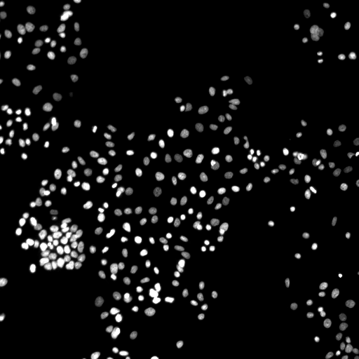
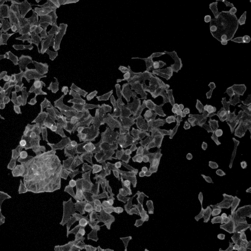
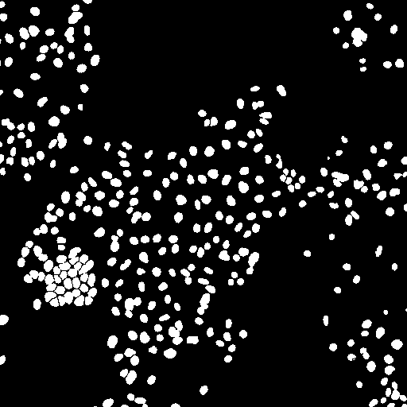

Broad Bioimage Benchmark Collection
Annotated biological image sets for testing and validation
Human HT29 colon-cancer cells
Accession number BBBC008 · Version 1
Example images
-

-

-

-

Biological application
These images are of human HT29 colon cancer cells, a cell line that has been widely used for the study of many normal and neoplastic processes. A set of about 43,000 such images was used by Moffat et al. (Cell, 2006) to screen for mitotic regulators. The analysis followed the common pattern of identifying and counting cells with a phenotype of interest (in this case, cells that were in mitosis), then normalizing the count by dividing by the total number of cells. Such experiments present two image analysis problems. First, identifying the cells that have the phenotype of interest requires that the nuclei and cells be segmented. Second, normalizing requires an accurate cell count.
Images
The image set consists of 12 images. The samples were stained with Hoechst (channel 1), pH3 (channel 2), and phalloidin (channel 3). Hoechst labels DNA, which is present in the nucleus. Phalloidin labels actin, which is present in the cytoplasm. The last stain, pH3, indicates cells in mitosis; whereas this was important for Moffat et al.'s screen, it is irrelevant for segmentation and counting, so this channel is left out.
BBBC008_v1_images.zip (7.6 MB)
Ground truth F
The images were segmented into foreground and background using a two-step process, where thresholding was used as an initial estimate and the resulting mask was subsequently cleaned up by hand. The masks are stored as 1-bit TIFF files.
BBBC008_v1_foreground.zip (474 kB)
Published results using this image set
(None.)
Recommended citation
"We used image set BBBC008v1 (Carpenter et al., Genome Biology, 2006), available from the Broad Bioimage Benchmark Collection[Ljosa et al., Nature Methods, 2012]."
Copyright
 The images and ground truth are licensed under a Creative Commons Attribution-NonCommercial-ShareAlike 3.0 Unported License by David Root and Anne Carpenter.
The images and ground truth are licensed under a Creative Commons Attribution-NonCommercial-ShareAlike 3.0 Unported License by David Root and Anne Carpenter.